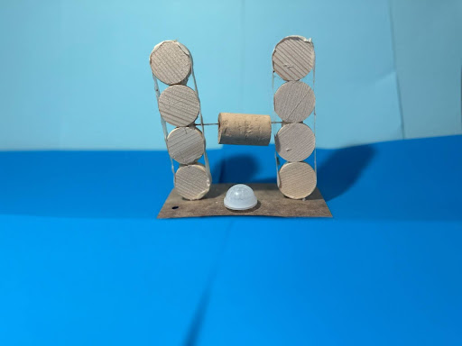

Alternatieve manier van Rotatie - Momenteel is deze pagina nog onderconstructie: Einde: 08-04-25
De constructie tijd is verstreken, helaas zijn er nog wat technische problemen! Kom later terug!
Team
- Micha Doorduin
- Julia de Graaf
- Ilian Runderkamp
Opdracht en Stappen
De opdracht was om een alternatieve manier te bedenken voor de rotatie van een buis die eerst werkte met een tandheugelsysteem. Na onderzoek naar materialen, hydrauliek en andere golfconverters, gingen we brainstormen. Iedereen bedacht 9 ideeën, waarvan we 3 concepten uitwerkten. Uiteindelijk combineerden we concept 2 en 3, zoals de opdrachtgever adviseerde.
Uitleg van het Systeem
De energie van golven wordt via converters, touwen en katrollen omgezet in elektriciteit. De beweging van het water zorgt ervoor dat een oranje buis en rode converters meebewegen. Aan de converters zitten HMPE-touwen die strak gespannen zijn. Door de beweging draaien katrollen, die op hun beurt dynamo’s aandrijven.
Zo vervingen wij het tandheugelsysteem én voegen we een nieuwe energiebron toe. Ook hebben we een video gemaakt: Video - uitleg - werking - Aqua stroom.
Bonus: Richting in de Stroom
We bedachten vinnen gebaseerd op biomimicry die het platform automatisch in de stromingsrichting laten draaien. Dit is terug te zien in onze technische tekening en Aqua Stroom - zij-stroming video.
Persoonlijke Groei
Mijn hoofdcompetentie was Planner. Ik heb een doelenplanner én een dag/lesplanner gemaakt. Dit hielp de groep met overzicht en structuur. Mijn persoonlijke planning kan beter: ik stelde soms werk uit tot thuis. Dat leidde tot tijdnood. Ik heb hiervan geleerd om beter gebruik te maken van de lestijd.
Iteraties
- Iteratie 1: Prototype zonk. Boorgat dichtgemaakt met lijmpistool.
- Iteratie 2: Anker maakte prototype stabieler. Probleem ontdekt met bewegende touwen.
- Iteratie 3: Anker vastgemaakt aan installatie. Nieuwe converter geprint (35mm i.p.v. 28mm).
Overige onderdelen
- Eindpresentatie (video)
- Adviesrapport / ontwerpverslag
- Filmmateriaal: Dutch Wave Power - Aqua Stroom, Aqua Stroom - Zij richting, etc.
- Schetsen en ontwerptekeningen
- Website portfolio
- Persoonlijke verslagen & eindreflectie
Bijlagen
- Poster eindpresentatie
- Eindmodel - Aqua Stroom
- Actie-afbeelding: Aqua Stroom - Iteratie 4
Spuugmodellen
- Ilian Runderkamp
- Julia de Graaf
- Micha Doorduin 
Bekijk mijn volledige portfolio: Klik hier